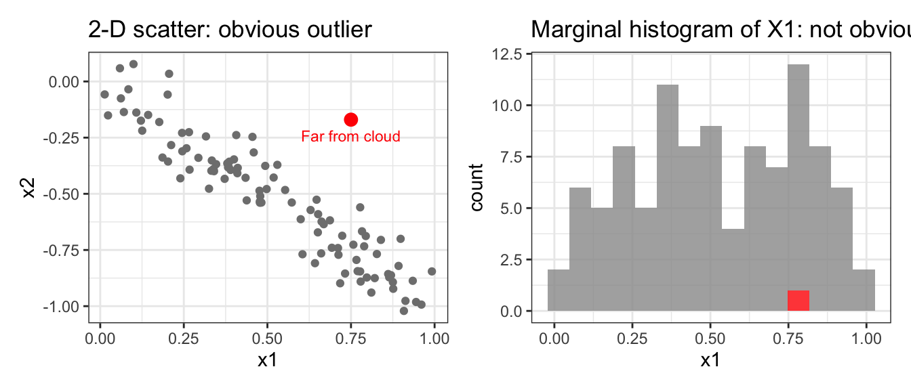
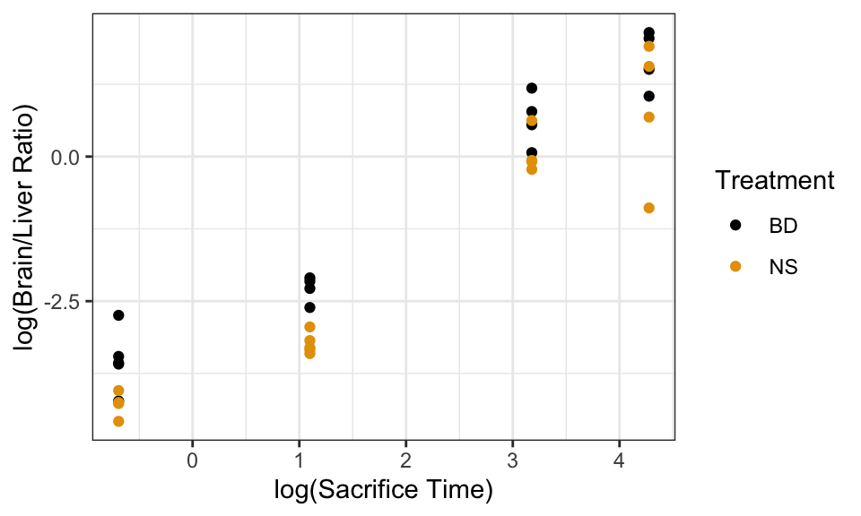
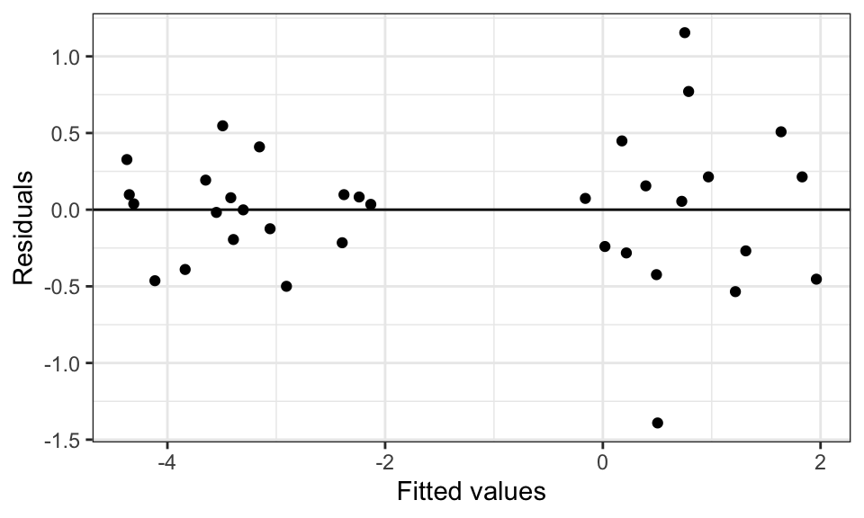
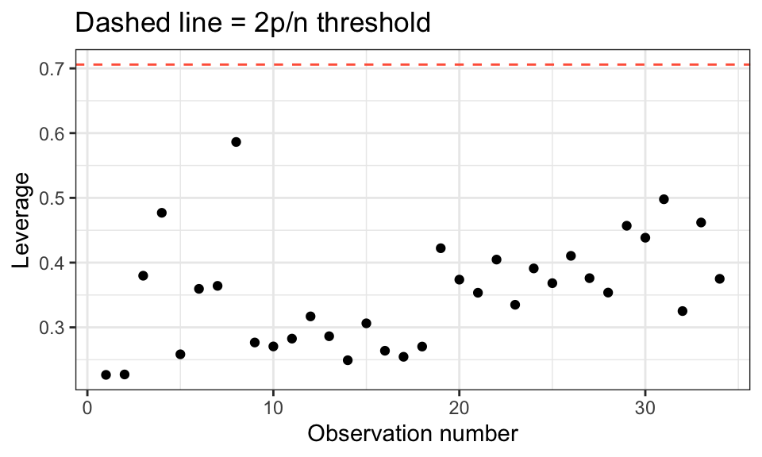
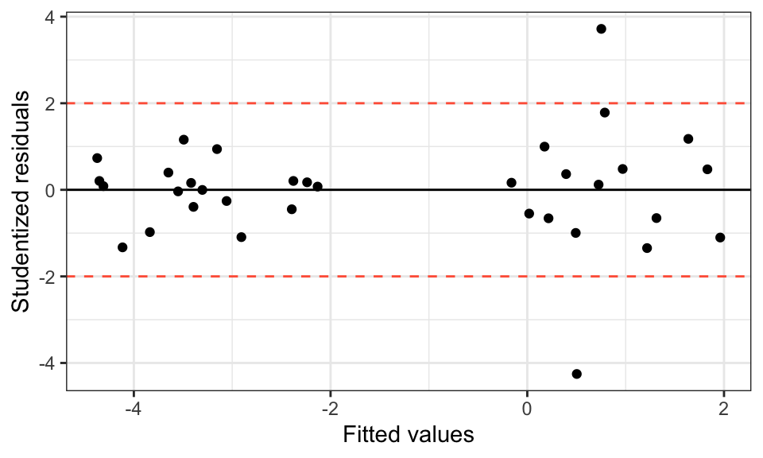
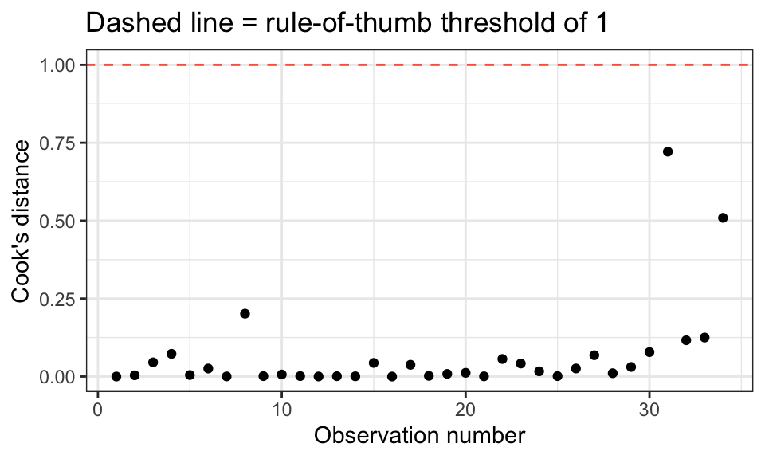

library(tidyverse)
library(broom)Outliers and Influential Observations
Learning Objectives
- Distinguish between outliers, high-leverage points, and influential observations.
- Compute and plot leverage values, studentized residuals, and Cook’s distance.
- Know how to responsibly handle influential observations.
- Sections 11.3–11.4 in the textbook.
Types of Unusual Observations
Three Concepts
| Type | What makes it unusual | Effect on the fit |
|---|---|---|
| Outlier | Large residual — unusual \(Y\) for its \(X\) values | May or may not influence the line |
| High-leverage point | Unusual \(X\) values — far from the center of the predictor space | May or may not have a large residual |
| Influential observation | Removing it noticeably changes the fitted line | High leverage and an outlier |
- High leverage alone is not harmful if the point happens to fall on the regression line.
- An outlier at the center of the \(X\) range tugs the intercept but not the slope.
- A point with both high leverage and a large residual is the dangerous combination.
Why High Leverage Is Hard to Spot Marginally
- You cannot find a multivariate outlier just by looking at histograms of each variable separately.
- Example: a point at \((X_1, X_2) = (0.75, -0.17)\) below appears extreme in the 2-D cloud but looks perfectly ordinary in either histogram alone.

Case Study: Blood-Brain Barrier
Background
- Researchers developed a treatment to disrupt the blood-brain barrier (BBB) so that anti-cancer drugs can reach brain tumors more effectively.
- Rats with brain tumors were randomized to receive the BBB-disrupting treatment or a saline control.
- Response:
Ratio= drug concentration in brain / drug concentration in liver.- Higher ratio means more drug reached the brain.
- Other measured variables: sacrifice time, sex, initial weight, weight loss, tumor weight, days post-inoculation.
case1102 <- read_csv("https://dcgerard.github.io/stat_302/data/case1102.csv")
case1102 <- case1102 |>
mutate(Ratio = Brain / Liver,
logRatio = log(Ratio),
logTime = log(Time))
glimpse(case1102)Rows: 34
Columns: 12
$ Brain <dbl> 41081, 44286, 102926, 25927, 42643, 31342, 22815, 16629, 223…
$ Liver <dbl> 1456164, 1602171, 1601936, 1776411, 1351184, 1790863, 163338…
$ Time <dbl> 0.5, 0.5, 0.5, 0.5, 0.5, 0.5, 0.5, 0.5, 0.5, 3.0, 3.0, 3.0, …
$ Treatment <chr> "BD", "BD", "BD", "BD", "BD", "NS", "NS", "NS", "NS", "BD", …
$ Days <dbl> 10, 10, 10, 10, 10, 10, 10, 10, 10, 10, 10, 10, 9, 9, 10, 10…
$ Sex <chr> "Female", "Female", "Female", "Female", "Female", "Female", …
$ Weight <dbl> 239, 225, 224, 184, 250, 196, 200, 273, 216, 267, 263, 228, …
$ Loss <dbl> 5.9, 4.0, -4.9, 9.8, 6.0, 7.7, 0.5, 4.0, 2.8, 2.6, 1.1, 0.0,…
$ Tumor <dbl> 221, 246, 61, 168, 164, 260, 27, 308, 93, 73, 25, 133, 203, …
$ Ratio <dbl> 0.02821179, 0.02764124, 0.06425101, 0.01459516, 0.03155973, …
$ logRatio <dbl> -3.56801513, -3.58844626, -2.74495789, -4.22706542, -3.45587…
$ logTime <dbl> -0.6931472, -0.6931472, -0.6931472, -0.6931472, -0.6931472, …EDA
ggplot(case1102, aes(x = logTime, y = logRatio, color = Treatment)) +
geom_point() +
labs(x = "log(Sacrifice Time)", y = "log(Brain/Liver Ratio)")
- The treatment appears to increase the brain/liver ratio — the BD-treated group sits higher.
- Log transformations of both
RatioandTimemake the relationship more linear and stabilize variance.
Fitting the Rich Model
- Use
as.factor(logTime)to treat sacrifice time as categorical (three distinct time points were used). - Include all available variables and an interaction between treatment and time.
lm_rich <- lm(logRatio ~ as.factor(logTime) * Treatment +
Sex + Weight + Loss + Tumor,
data = case1102)aug_rich <- augment(lm_rich)
ggplot(aug_rich, aes(x = .fitted, y = .resid)) +
geom_point() +
geom_hline(yintercept = 0) +
labs(x = "Fitted values", y = "Residuals")
- Two points stand out with large residuals — worth investigating further.
Leverage
Definition
- Leverage measures how far an observation’s \(X\) values are from the center of the predictor space.
- A high-leverage point has the potential to pull the regression line.
- Leverage values (often called “hat values”) are always between 0 and 1.
- A typical leverage value is \(p / n\), where \(p\) = number of parameters.
- Rule of thumb: leverage \(> 2p/n\) is “high.”
Computing Leverage in R
n <- nrow(aug_rich)
p <- length(coef(lm_rich))
aug_rich |>
mutate(obs = row_number()) |>
ggplot(aes(x = obs, y = .hat)) +
geom_point() +
geom_hline(yintercept = 2 * p / n, linetype = "dashed", color = "tomato") +
labs(x = "Observation number", y = "Leverage",
title = "Dashed line = 2p/n threshold")
- Several observations exceed the \(2p/n\) threshold — worth noting, but not automatically alarming.
Studentized Residuals
Definition
- Ordinary residuals have different variances depending on the observation’s leverage.
- Studentized residuals correct for this: they measure how many standard deviations an observation’s residual is from zero.
- Under the model assumptions, studentized residuals follow a \(t\)-distribution.
- Rule of thumb: expect about 5% of studentized residuals to fall outside \(\pm 2\) by chance. Many more than 5% suggests model problems.
Computing Studentized Residuals in R
aug_rich |>
mutate(stud_res = rstudent(lm_rich)) |>
ggplot(aes(x = .fitted, y = stud_res)) +
geom_point() +
geom_hline(yintercept = 0) +
geom_hline(yintercept = c(-2, 2), linetype = "dashed", color = "tomato") +
labs(x = "Fitted values", y = "Studentized residuals")
- Two observations have studentized residuals exceeding \(\pm 2\) — consistent with what we saw in the raw residual plot.
Cook’s Distance
Definition
- Cook’s distance measures the overall influence of an observation: how much do all the fitted values change when this observation is removed?
- It combines both leverage and residual size into a single number.
- Cook’s distance is always positive.
- Rule of thumb: Cook’s distance \(> 1\) indicates a strongly influential observation.
Computing Cook’s Distance in R
aug_rich |>
mutate(obs = row_number()) |>
ggplot(aes(x = obs, y = .cooksd)) +
geom_point() +
geom_hline(yintercept = 1, linetype = "dashed", color = "tomato") +
labs(x = "Observation number", y = "Cook's distance",
title = "Dashed line = rule-of-thumb threshold of 1")
- No observation exceeds Cook’s distance of 1 in this dataset.
- The two observations with large studentized residuals are noticeable but not enormously influential overall.
Putting It All Together
Using augment() for Diagnostics
The augment() function from broom adds model diagnostics directly to the data frame:
| Column | Description |
|---|---|
.fitted |
Fitted values \(\hat{Y}_i\) |
.resid |
Residuals \(Y_i - \hat{Y}_i\) |
.hat |
Leverage values |
.std.resid |
Standardized residuals (similar to studentized) |
.cooksd |
Cook’s distance |
augment(lm_rich) |>
select(.fitted, .resid, .hat, .std.resid, .cooksd) |>
arrange(desc(.cooksd)) |>
glimpse()Rows: 34
Columns: 5
$ .fitted <dbl> 0.7525731, 0.5031866, -4.1148668, 1.2177072, 0.7879681, 1.9…
$ .resid <dbl> 1.15473188, -1.39119508, -0.46339887, -0.53456014, 0.771023…
$ .hat <dbl> 0.4978708, 0.3749781, 0.5863339, 0.4619573, 0.3251558, 0.43…
$ .std.resid <dbl> 2.9551482, -3.1911428, -1.3065796, -1.3215817, 1.7020472, -…
$ .cooksd <dbl> 0.721569998, 0.509121954, 0.201644148, 0.124965985, 0.11631…What To Do With Influential Observations
Step 1: Investigate
- Look at the actual data values for high-influence points.
- Is there a data entry error? A species misclassified? An impossible value?
- If so, correct or remove and document why.
Step 2: Fit With and Without
- If no data error is found, do not automatically discard the point.
- Fit your final model both including and excluding the influential observations.
- If conclusions do not change: keep them, report the full analysis.
- If conclusions change substantially: report both results and note the sensitivity.
- State the scope of inference — e.g., “Results apply to rats weighing between 200 and 400 g.”
Step 3: Never Cherry-Pick
- Removing an observation purely because it disagrees with your hypothesis is scientific misconduct.
- Document every exclusion decision and your reason for it.
Exercises
1. Use the blood-brain barrier data to identify which observation(s) have the highest leverage and the largest studentized residuals.
Filter
augment(lm_rich)to show all rows where.hat > 2 * p / n(using the values ofpandndefined in this lecture). Which sacrifice-time / treatment combinations correspond to these high-leverage points?Which observation has the largest absolute studentized residual? Look at its raw data values. Does anything seem unusual about it?
Is there a single observation with both high leverage and a large studentized residual? Check its Cook’s distance. Does it exceed the rule-of-thumb threshold?
2. Fit the simpler final model below to the blood-brain barrier data:
lm_final <- lm(logRatio ~ logTime + Treatment, data = case1102)Produce a residual plot and a QQ-plot of the residuals. Do the linearity and normality assumptions look reasonable?
Compute and plot Cook’s distances. Are any observations strongly influential?
Identify the observation with the highest Cook’s distance. Refit the model without it and compare the coefficient for
TreatmentBDfrom the two fits (with and without). Does removing this observation change the conclusion?
3. Explain in your own words why a point with high leverage but a small residual is not necessarily a problem, whereas a point with high leverage and a large residual is the most dangerous combination for a regression analysis.